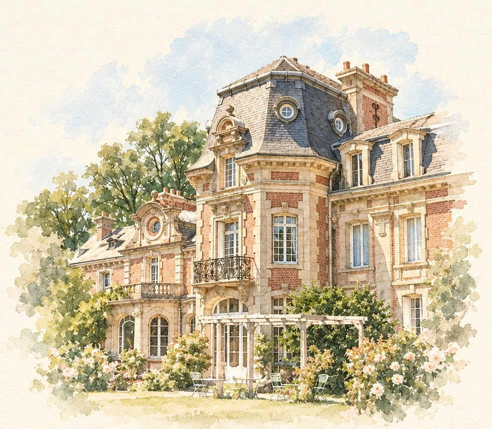
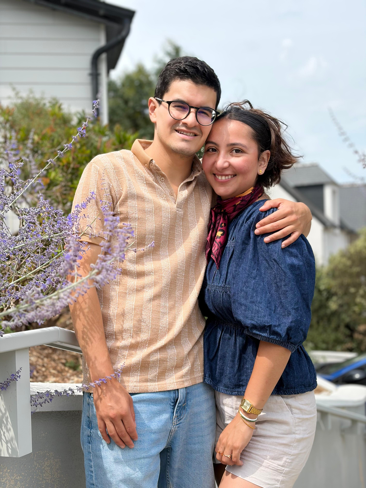

Programme
16h30
Cérémonie religieuse
Église Saint-Michel de Bertreville
4 Rte de l'Église, 76590 Bertreville-Saint-Ouen
Voir sur Google Maps17h30
Réception — Cocktail, dîner, soirée
Château de Bertreville
Rte de la Mairie, 76590 Bertreville-Saint-Ouen
Voir sur Google MapsHeure de fin de la soirée : cela ne dépendra que de vous !
11h30 le lendemain
Brunch
Château de Bertreville

FAQ
🅿️ Parking
Un parking est disponible au château et à proximité de l'église.
🏨 Où dormir ?
Nous vous partagerons prochainement quelques adresses d'hôtels et de chambres d'hôtes à proximité du château.
🚕 Retour après la soirée
Un taxi effectuera des trajets à partir de 01h et jusqu'à 04h du matin.
👶 Babysitter
Oui, une solution de babysitting sera prévue pour les enfants.
➕1 autorisé ?
Malheureusement non, sauf si votre +1 figure dans la liste des invités.
☀️ Météo
Si la météo le permet, le cocktail et le brunch auront lieu en extérieur dans le parc du château. Si la pluie s'invite à la fête, ils auront lieu à l'intérieur du château.
Le dîner et la soirée auront lieu à l'intérieur du château.
Notre histoire
— Texte à venir —

Liste
Bien entendu, votre présence est le plus beau des cadeaux.
Si vous souhaitez tout de même participer à notre voyage de noces en Colombie 🇨🇴, voici le lien vers la cagnotte.
Accéder à la cagnotteNous avons hâte de vous retrouver pour cette merveilleuse journée !